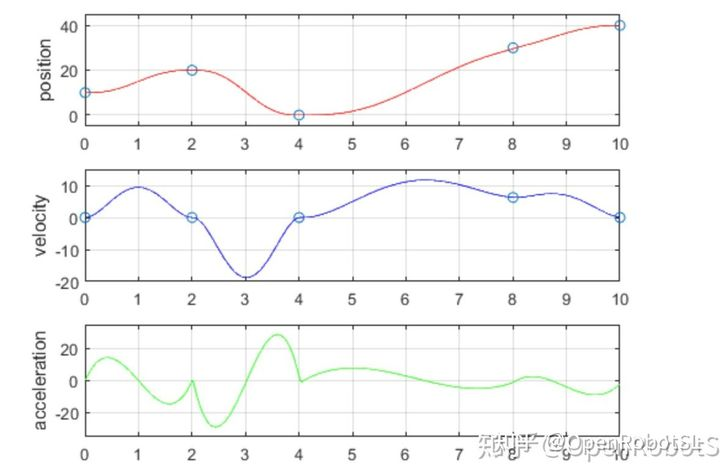
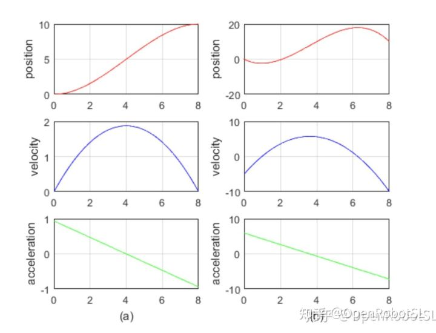
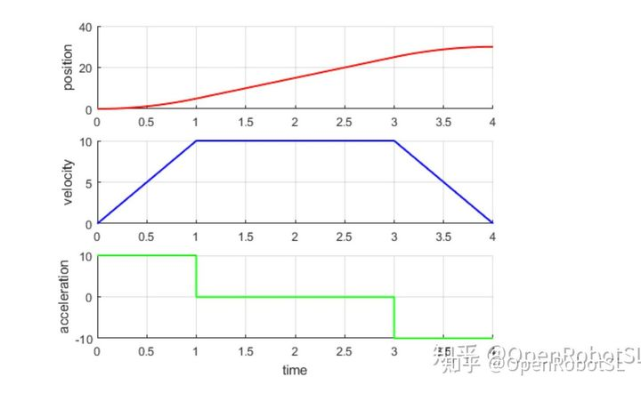
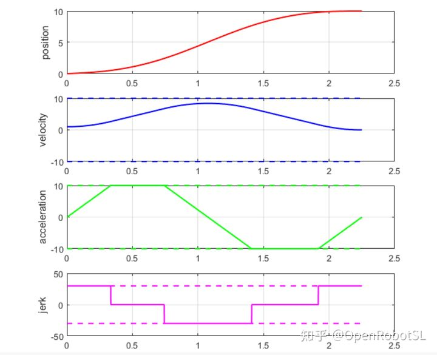
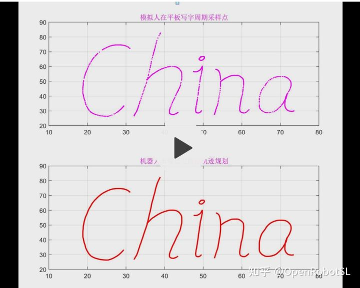

Home
本文转载自： https://zhuanlan.zhihu.com/p/367717375
先从基础说起
对于一个多项式，当求导次数越高，对最后一个量进行控制的时候，就可以得到品质越好的轨迹。
pos vel acc jerk snap tauque等，但是导数增加 会产生两个问题：1，控制频率提高，算法有可能造成抖动。2，响应速度降低。
比较典型的案例
1：3次多项式，5次多项式，会发现虽然5次曲线非常平滑，启动停止比3次顺滑不少，但是总体波动性要大于3次。
这里直接引了“古月居”，“胡老师”的几句话，下图是5次多
有一个很重要的问题就是加速度的抖动，应该就是传说中的“龙格现象”，这种抖动已经远远超过了机器人的加速度限制

下图为三次，可以看出
我们就对三次样条所产生的效果大致明白了，从位置曲线上来看，确实平滑了，速度的上升阶段接近于匀速，在最上边的匀速段稍有抖动，机器速度呈一阶线性变化。

2：S速度与T速度
下图为T
梯形速度曲线，也称为直线加减速或T型加减速。其算法十分简易，规划周期耗时短，有利于缩减系统的连续运行时间，从而提高系统的运动控制速度，实施起来比较容易，应用广泛。
但它采用的是匀加减速，使得在加、减速阶段的起点和终点处加速度存在突变，加速度曲线不连续，使其加速、匀速和减速过程不能实现平滑过渡，存在跳跃现象，导致关节电机进行插补时产生较大的冲击

下图为S
比T更加平滑，加速度连续。
但无法达到给定最大加速度时，通过减小最大加速度约束来规划轨迹，这使得所得的轨迹通常不是最优，即在指定的参数范围内，不是时间最短的轨迹。无法达到给定最大加速度时，通过减小最大加速度约束来规划轨迹，这使得所得的轨迹通常不是最优，即在指定的参数范围内，不是时间最短的轨迹。在给定的位移较小，无法达到给定的始末速度时，该算法不能进行处理。这需要用户进行额外的处理，重新给定参数，使得轨迹存在。同时响应速度比较低。

以上都是基于离线规划，也就是需要靠初始状态和目标状态，计算出确定表达式来进行规划。所有参数都是一次性 预先算出然后进行插补，伪实时规划。这也是大部分机器人规划中的问题，说实时规划，其实还是离线规划参数，然后同步下发而已。
但是实际上没有考虑动态过程，如果考虑了动态过程，那么就要实时规划，所有参数都是基于状态实时产生的，这也造成了下文中说到的问题。
下面就属于动态规划

======================================================================
我的测试结果及程序
下面是我测试的代码：